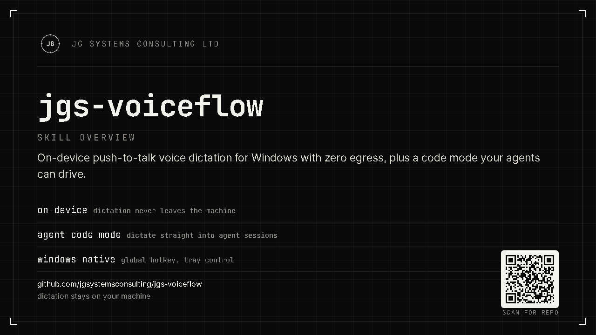

On-device, private
Local speech-to-text by default. Zero network egress. Your audio is never uploaded.
VoiceFlow is a push-to-talk dictation app for Windows. Hold a key, speak, release, and your words appear at the cursor in any app. Transcription runs entirely on your own PC, so your voice and text never touch the internet. Free to use.

Local speech-to-text by default. Zero network egress. Your audio is never uploaded.
With the bundled Parakeet engine, a sentence transcribes in well under a second on a normal CPU.
A dedicated code mode turns spoken requests into clean prompts for Claude Code or Cursor.
VoiceFlow is for anyone who would rather talk than type, and especially for developers who work with an AI coding assistant all day. If you use Claude Code, Cursor, or a chat-based assistant to build software, most of your input is prose: describing a change, pasting an error, sketching a feature. Typing that is slow, and speaking it rambles. VoiceFlow closes that gap. You hold a key, say what you want, and a clean, code-aware prompt lands in the chat box, ready to send.
It also handles the everyday cases: notes, messages, email drafts, filling in a form. The same hold-to-talk flow works in any text field, in any application.
There is no window to switch to, no "send" button, and no account. VoiceFlow lives in the system tray and waits for the hotkey.
Two ways to trigger, set in Settings: hold (record while the key is held, transcribe on release: best for quick bursts) or toggle (tap once to start, tap again to stop: best for longer, hands-free dictation).
Every capture runs through a mode that decides how the raw transcript becomes text. Switch per capture from the tray menu, or set a default in Settings. The non-LLM modes (raw, clean, code) are fully offline and instant. The LLM modes (summary, prompt, systems) are optional, and only run if you point VoiceFlow at a local model (such as Ollama) or a cloud endpoint you configure.
| Mode | What it does | Needs an LLM? | Best for |
|---|---|---|---|
raw | Verbatim transcript, lightly punctuated. Nothing removed. | No | Quoting exactly what was said |
clean (default) | Removes filler ("um", "you know"), collapses repeats, fixes spacing and capitalisation. | No | Everyday dictation: notes, messages |
summary | Condenses rambling speech into a tight brief. | Yes (local or cloud) | A spoken brain-dump into a crisp note |
prompt | Reformats speech into a structured LLM prompt (role, task, constraints, context). | Yes | Crafting a careful prompt by voice |
code | Trims politeness, keeps code-meaningful words, and fixes programming terms. Instant, no LLM. | No | Dictating to Claude Code / Cursor |
systems | Rewrites speech into formal Systems Engineering terminology (INCOSE/ISO 15288). | Yes | SE notes, emails, and reports |
Both examples below are literal output from the current build.
clean spoken: um so basically i need to add a a login function you know output: So i need to add a login function.
code spoken: um can you please add a dunder init to the fast api app output: Add a __init__ to the FastAPI app.
code mode and the code-aware dictionaryThis is the feature built specifically for dictating to an AI coding assistant. Two things happen in code mode, both instant and on-device:
Spoken requests start with filler and courtesy ("um, can you please..."). Code mode strips that and leaves the imperative, which is exactly what an AI assistant wants.
A built-in dictionary rewrites spoken programming terms into the symbols and names you meant, and keeps words that are meaningful in code instead of deleting them as filler.
say: write a test for the postgres connection get: Write a test for the PostgreSQL connection. say: create a dot py file with a dunder init get: Create a .py file with a __init__.
say: refactor this like the right way using type script get: Refactor this like the right way using TypeScript. say: add a triple equals check not equal to null get: Add a === check != to null.
| You say | You get |
|---|---|
| dunder init | __init__ |
| arrow function / fat arrow | => |
| double equals / triple equals / not equal | == / === / != |
| dot py / dot ts / dot js / dot json / dot md | .py / .ts / .js / .json / .md |
| fast api | FastAPI |
| postgres | PostgreSQL |
| node js | Node.js |
| type script / java script | TypeScript / JavaScript |
| git hub | GitHub |
You can add your own. The code dictionary merges with your personal dictionary in the config file, and your entries win. It applies in all modes, not just code, so even a clean capture gets your terms fixed. Code mode adds the politeness trimming on top. See the guide for how to add terms.
With on-device speech-to-text and no LLM configured, no audio and no text ever leave your machine. There is no account, no telemetry, and no upload. Speech is transcribed by a model that runs on your CPU, bundled with the app. The cleanup for raw, clean, and code modes is plain on-device text processing. The optional summary and prompt modes use an LLM only if you configure one, and you can point them at a local model to stay fully offline. Cloud speech and cloud LLM are strictly opt-in and never selected automatically.
Get VoiceFlow-Setup.exe (about 700 MB; the offline models are bundled) from the latest release.
Per-user install, no administrator rights. VoiceFlow is not code-signed yet, so Windows may warn about an unknown publisher: choose More info, then Run anyway.
VoiceFlow profiles your hardware and picks the optimal local model automatically, on-device. Nothing is asked of you.
Hold Ctrl+Space, speak, release. The cleaned text is pasted at your cursor.
A complete how-to guide, plus quickstart, FAQ, troubleshooting, and the privacy verification recipe.
SHEET: DOCS · PRODUCT: VOICEFLOW · REV: 0.3.0 · PUBLISHER: JG SYSTEMS CONSULTING LTD.